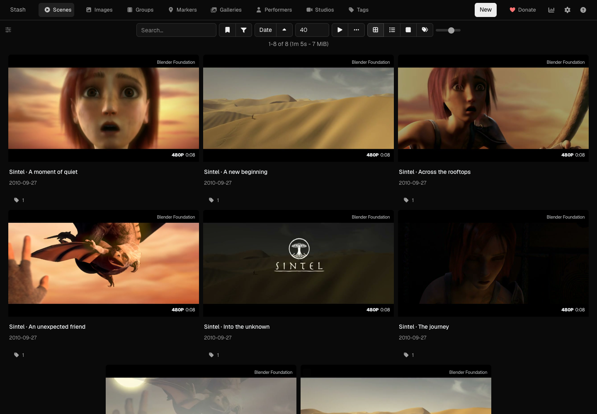
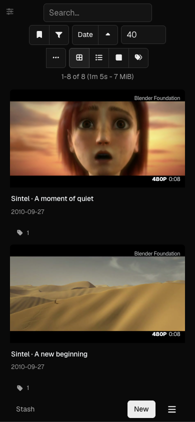

Stash Minimal · {{VERSION}}
A quieter library.
A minimal dark theme for Stash. Neutral surfaces, compact controls, and locally bundled Geist Sans. CSS only, with your existing Stash controls.

Install in Stash
- Open Settings → Plugins → Available Plugins → Add Source.
- Name it Stash Minimal and paste the source URL below.
- Install Stash Minimal, disable your previous theme, and reload.
https://quietframe-player.github.io/stash-minimal/index.yml
